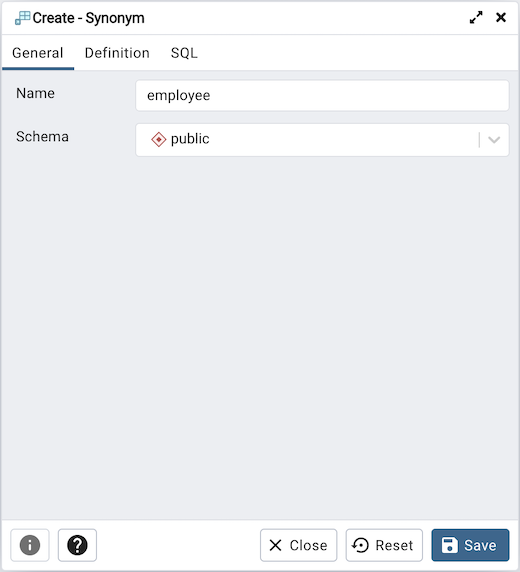
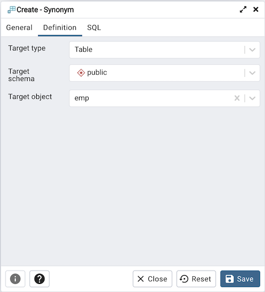
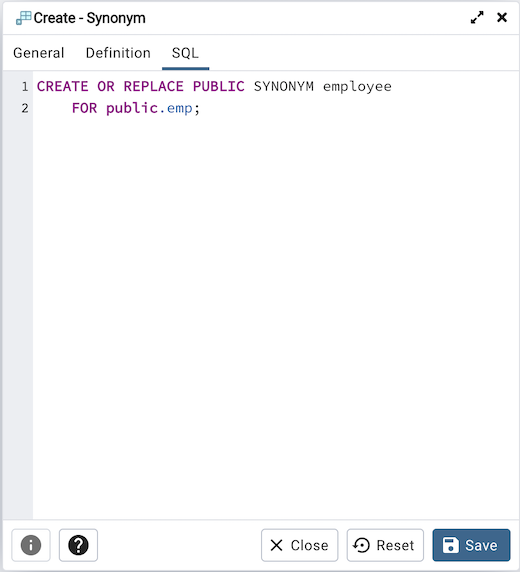

Synonym Dialog¶
Use the Synonym dialog to substitute the name of a target object with a user-defined synonym.
The Synonym dialog organizes the development of a synonym through the General tab. The SQL tab displays the SQL code generated by dialog selections.
Use the fields in the General tab to identify the synonym:
Use the Name field to specify the name of synonym. The name will be displayed in the pgAdmin tree control.
Select the name of the schema in which the synonym will reside from the drop-down listbox in the Schema field.
In the definition panel, identify the target:
Use the drop-down listbox next to Target Type to select the type of object referenced by the synonym.
Use the drop-down listbox next to Target Schema to select the name of the schema in which the object resides.
Use the drop-down listbox next to Target Object to select the name of the object referenced by the synonym.
Click the SQL tab to continue.
Your selections and entries in the Synonym dialog generate a SQL command.
The example creates a synonym for the emp table named emp_hist.
Click the Save button to save work.
Click the Close button to exit without saving work.
Click the Reset button to restore configuration parameters.